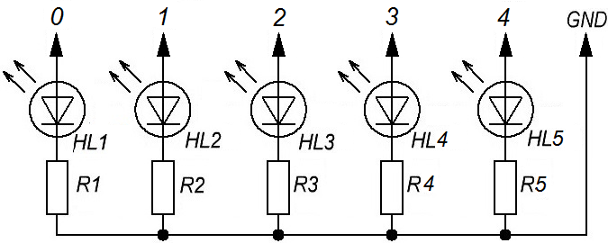
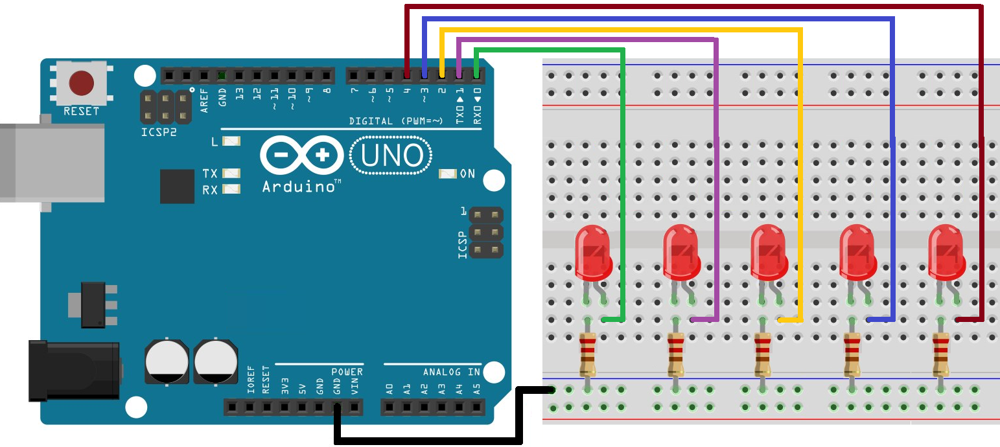

Бегущие огни на Arduino UNO
Схема для создания эффекта бегущего огня из 5 светодиодов показана на рис 1.


Для управления светодиодами будем использовать манипуляции с портами Arduino: будем напрямую записывать данные в порты Arduino. Это позволит установить значения для светодиодов при помощи одной лишь операции.
У Arduino UNO имеется 3 порта:
- B - цифровые входы/выходы с 8 по 13;
- C - аналоговые входы;
- D - цифровые входы/выходы с 0 по 7.
Каждый порт управляется 3 регистрами:
- Регистр DDR определяет режим работы вывода - вход или выход.
- Регистр PORT устанавливает вывод в состояние HIGH или LOW.
- Регистр PIN позволяет считывать состояния выводов Arduino в режиме вход.
Так как светодиоды подключены к выводам 0-4 будем использовать порт D. Эти выводы должны быть установлены в режим цифрового вывода (OUTPUT). Для этого биты 0-4 регистра DDRD должны быть установлены в 1:
DDRD = B00111110;
Чтобы зажечь светодиод необходимо соответствующий бит регистра PORTD установить в 1. Например, чтобы зажечь первый и четвертый светодиоды:
PORTD = B00001001;
Скетч:
unsigned int updown=1;// updown=1 - увеличиваем номер светодиода // updown=0 - уменьшаем номер светодиода unsigned int shift=0; // сдвиг равен 0 void setup() { DDRD=B00011111; // устанавливаем регистры 0-4 порт D как выход PORTD=B00000000; } void loop() { if(updown==1) // если увеличиваем номер светодиода, { shift++; // то сдвиг увеличиваем на 1 if(shift>=4) //если достигнут наибольший номер светодиода, updown=0; //то в следующем цикле идем вниз } else // иначе увеличиваем номер светодиода, { shift--; // сдвиг уменьшаем if(shift==0) // если достигнут наименьший номер светодиода, updown=1; //то в следующем цикле идем вверх } PORTD = B00000001 << shift; //сдвиг на величину shift delay(200); // пауза 200 мс }
Переменная updown содержит значение куда двигаться - вверх или вниз, а переменная shift - какие светодиоды зажигать.
В главном цикле программы loop(), светодиоды по очереди загораются вверх путем увеличения переменной shift, а когда доходит до самого верхнего, то переменной updown присваивается 0 и светодиоды загораются вниз по очереди.
Источники
cxem.net - Arduino UNO урок 4 - Бегущий огонь